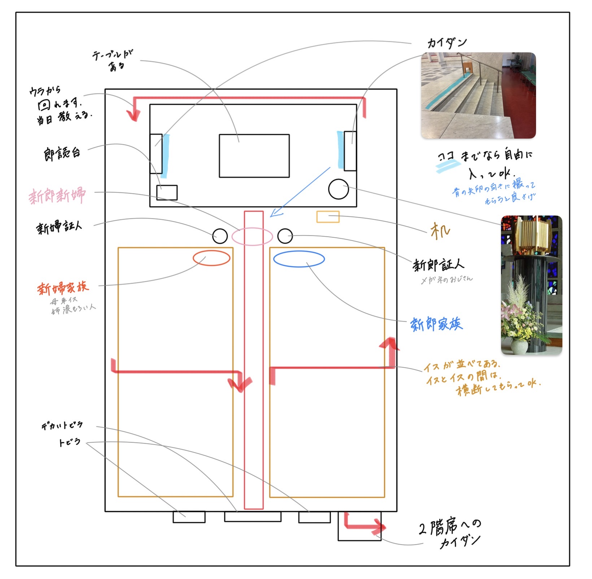
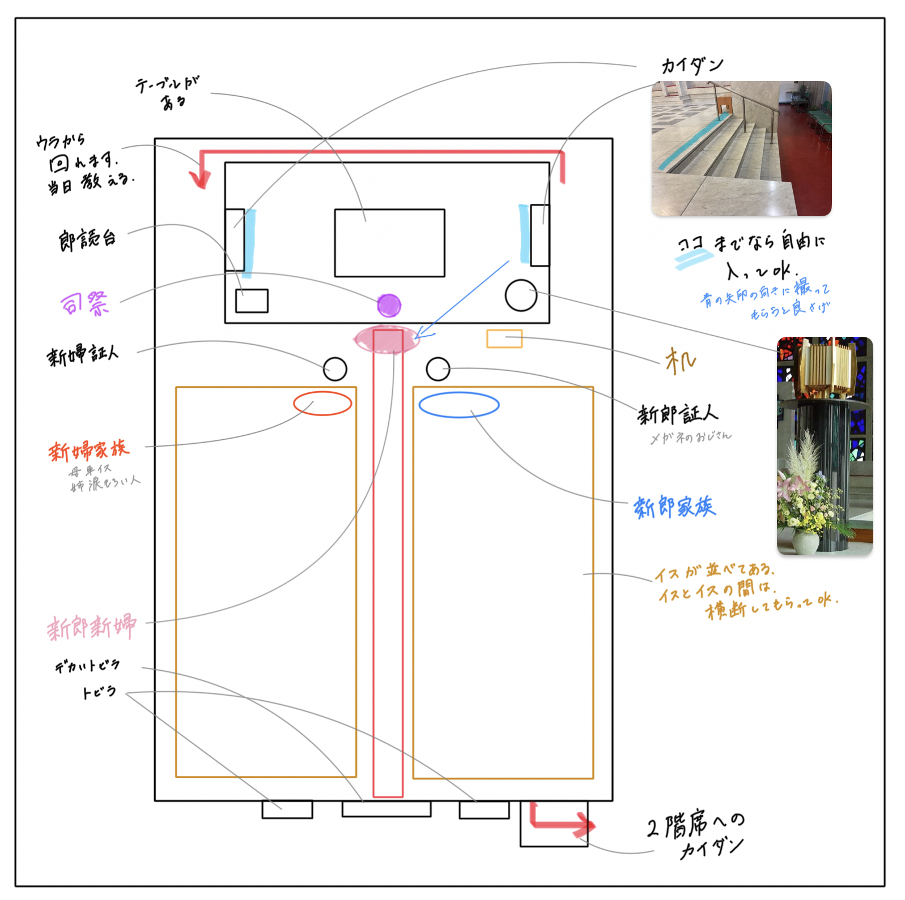

上から見た全体図
開式
新郎新婦入堂
新郎新婦の動き：
①中央の扉から二人で並んでゆっくり歩く。緊張感がある感じで、手とか振らない。
②司祭の前で止まり、司祭が何か唱える。再度、曲が流れる。
※新郎が右、新婦が左。この後も基本的にこの並び。
聖書朗読する
第一朗読
福音朗読
新郎新婦の動き：
並んで座る。
司祭のフリートーク
新郎新婦の動き：
並んで座る。
結婚の儀式
結婚の意思の確認
新郎新婦の動き：
司祭から質問され、それに答える。
結婚の誓約
新郎新婦の動き：
二人で喋る。
※宗教的に一番大事なシーン
結婚の宣言
新郎新婦の動き：
司祭が結婚を成立したことを述べた後、新郎が新婦のベールをあげる。
指輪の儀式
指輪の祝福
新郎新婦の動き：
指輪の交換
新郎新婦の動き：
二人で喋った後、新郎が新婦に指輪をつけて、新婦が新郎に指輪をつける。
共同祈願
家族と証人と新郎新婦がそれぞれ喋る
新郎新婦の動き：
立ち。新郎家族→新婦家族→新郎証人→新婦証人のあと、一緒に2回喋る。
ミサの儀式
感謝の典礼
交わりの儀
新郎新婦の動き：
立ち。手を合わせてる。
※ここまでおそらく30分ぐらい
※しばらく全員立ちで、歌と全員で何かを喋るのが繰り返される
平和のあいさつ
新郎新婦の動き：
それぞれ近くにいる人に挨拶する。（全員がする。）
聖体拝領
新郎新婦の動き：
司祭の前に進んで、白い丸いものを受け取って食べる。その後座る。
※信者の人も同じように司祭に並んで丸いものを受け取って食べる。それ以外の人は座る
閉祭
祝福
新郎新婦の動き：
立って司祭の前に行く。司祭が両手を突き出して、新郎新婦はお辞儀する。
新郎新婦退堂
新郎新婦の動き：
中央の扉から二人で並んでゆっくり歩く。明るい感じで、手とかふる。
※新郎が右、新婦が左